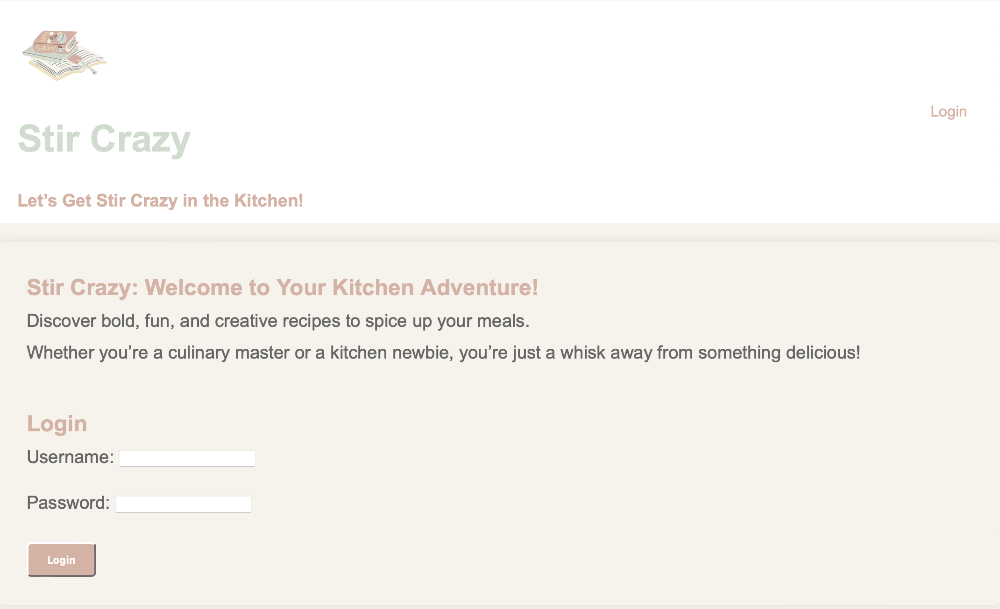
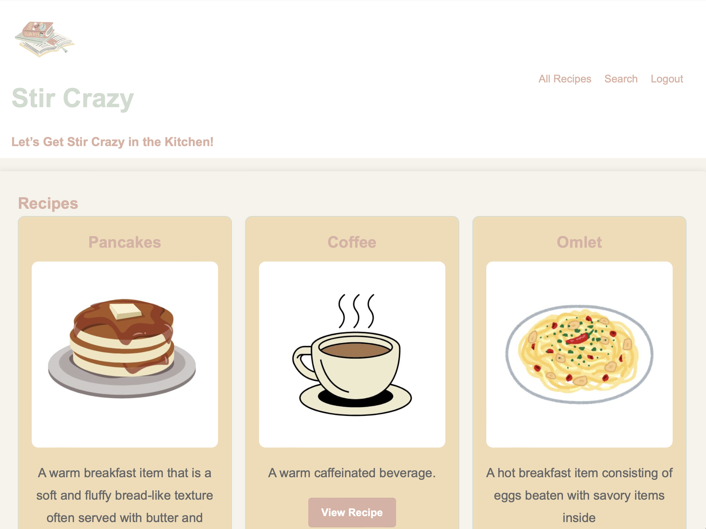
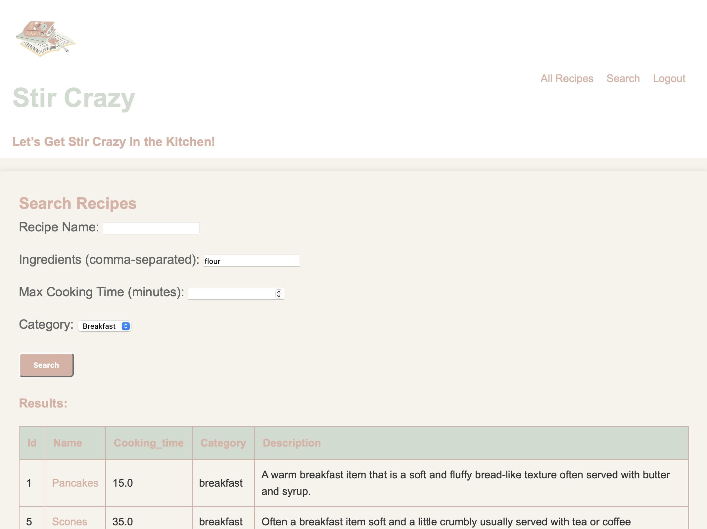
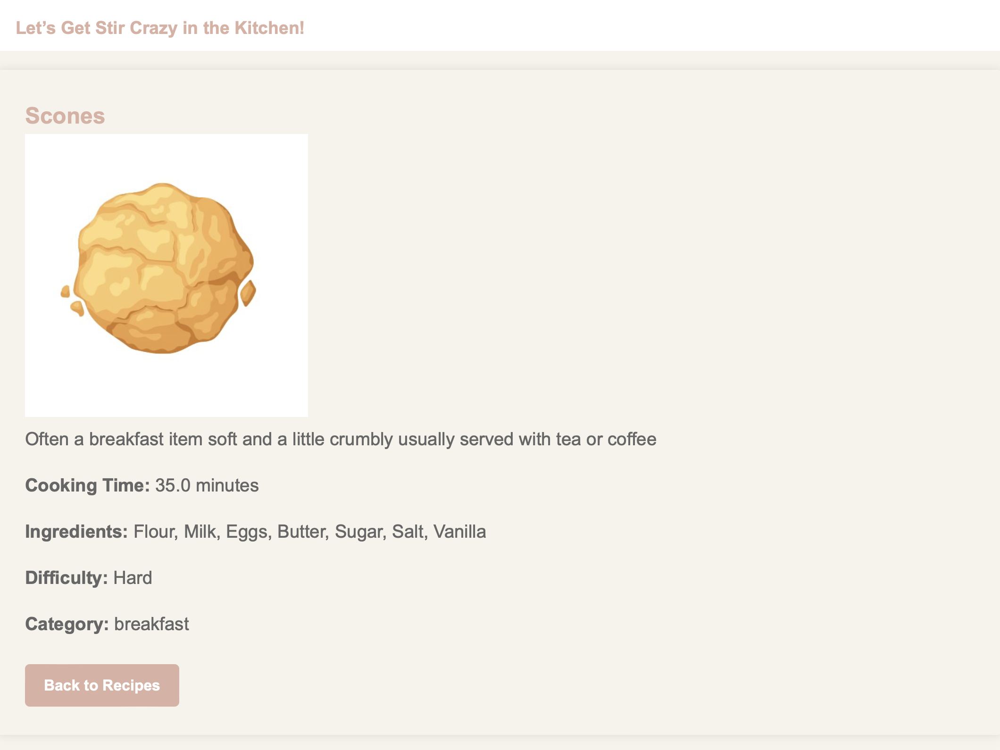

This project, "Stir Crazy," is a Django-powered web application designed to allow users to explore, add, and search through a wide array of recipes. Users can browse detailed recipe information, contribute their own recipes, and search based on specific criteria, creating a dynamic and interactive experience for home cooks. The choice of Django for the backend, combined with Bootstrap and custom CSS for styling, facilitated a responsive, database-driven interface that is both functional and visually appealing.

The main objective was to create a user-friendly, maintainable recipe application where users can:
"Stir Crazy" is a web application built with Django, leveraging its built-in ORM and templating system. SQLite serves as the database, chosen for its simplicity and integration with Django's development setup, enabling quick prototyping and deployment. Bootstrap and custom CSS styles were used for the front end, providing responsive design elements and a cohesive, visually appealing layout. Additionally, Pandas is used in the backend to structure and manipulate recipe data before displaying search results, allowing complex filtering and data handling capabilities.


